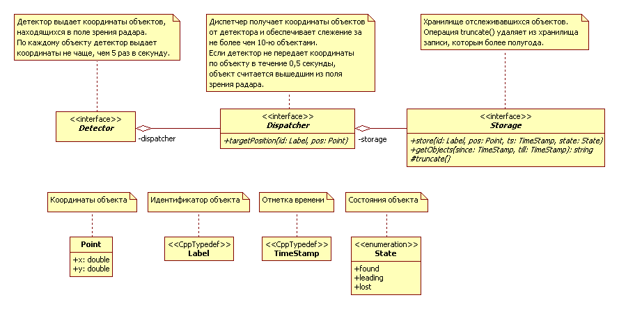
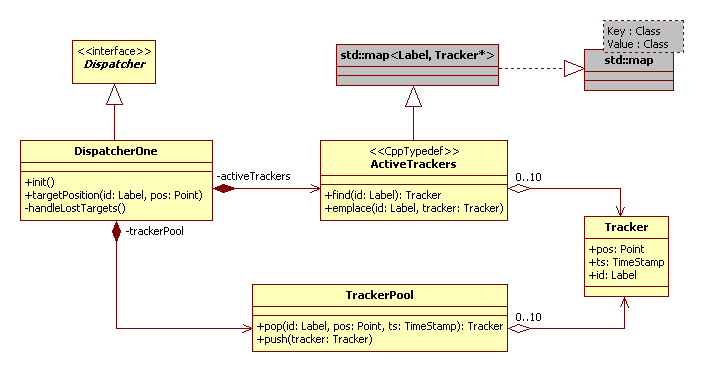
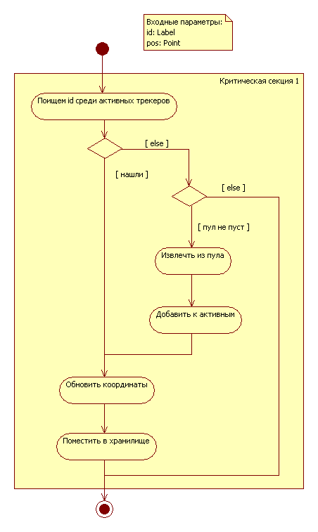
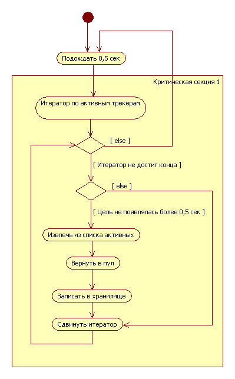
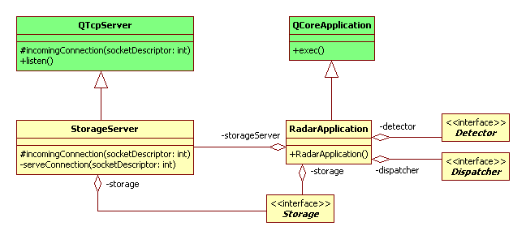
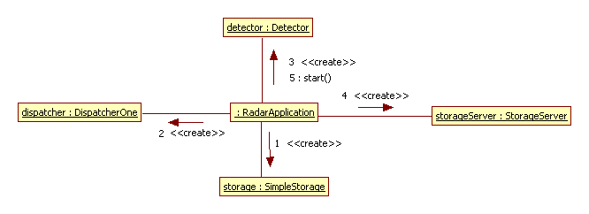
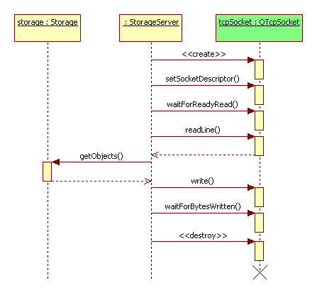

Входит ли драйвер в состав системы, или является внешним объектом для системы, который передает ей сообщения через стандартный поток ввода/вывода?
Проще было бы считать, что драйвер не входит в состав системы, но мы пойдем другим путем и будем считать, что драйвер является частью системы, и вывод в стандартный поток выполняет система.
Под максимальным числом объектов можно понимать максимальное число объектов, которые могут одновременно появиться в поле зрения радара, или максимальное число объектов, за которыми может следить система.
Будем считать, что это именно максимальное число объектов, за которыми может следить система, а в поле зрения радара может находиться и большее число объектов.
Объект будет считаться потерянным, если последний раз объект появлялся в поле зрения радара более, чем полсекунды тому назад.
На экране должно отображаться положение объектов в реальном времени. На экран координаты объектов могут отправляться непосредственно с радара или из хранилища.
Будем считать, что на экран координаты объектов попадают из хранилища. В этом смысле экран можно считать внешней системой, запрашивающей данные из хранилища, и взаимодействующей с системой по тому же самому протоколу, что и другие внешние системы.
В разрабатываемой системе выделим три основных компонента (интерфейса): детектор (Detector), диспетчер (Dispatcher), хранилище (Storage).

Хранилище функционирует независимо от остальных компонентов и предоставляет возможность, с одной стороны, помещать в себя данные (операция store), с другой стороны, получать из себя данные в формате JSON (операция getObjects). Также в хранилище предусмотрена операция truncate, очищающее его от устаревших данных.
Диспетчер получает координаты объектов, обнаруженных детектором, с помощью операции targetPosition, фильтрует их таким образом, чтобы одновременно следить не более чем за десятью целями (ограничение в задании), и передает на хранение хранилищу.
Детектор определяет координаты и идентификторы объектов и передает их диспетчеру. По каждому объекту координаты определяются не чаще, чем пять раз в секунду (ограничение в задании).
Как уже было сказано выше, экран обращается к хранилищу за координатами текущих объектов для их визуализации. Поскольку экран взаимодействует с системой "Радар" как внешняя система, то его проектирование и реализацию пока отложим.
Для хранения и передачи данных об обнаруженных объектах введем вспомогательные типы данных:
Point — структура, задающие координаты объекта x и y;
Label — тип для хранения идентификторов объектов;
TimeStamp — тип для хранения отметки времения получения данных об объекте;
State — перечисление для хранения состояния объекта.
Диспетчер смоделируем более подробно.
Структурный аспект представлен на следующей диаграмме.

В основе управления отслеживаемыми объектами лежит структура Tracker (далее трекер), в которой может храниться информация об одном отслеживаемом объекте. Далее такие объекты будем называть целями. В трекере хранится идентификатор, координаты и время обновления информации о цели.
В диспетчер входит два контейнера: пул трекеров trackerPool и список активных трекеров activeTrackers.
Пул трекеров предназначен для хранения незадействованных трекеров и поддерживает две операции:
pop — извлечение трекера из пула;
push — помещение трекера в пул.
При извлечении трекера он сразу инициализируется нужным идентификатором, координатами и отметкой времени цели.
Список активных трекеров представляет собой ассоциативный массив STL, позволяющий быстро находить трекер по идентификатору цели.
В список активных трекеры попадают из пула. Изначально в пул помещается десять трекеров. Таким образом реализуется ограничение, при котором система может ослеживать одновременно не более десяти целей.
Диспетчер наследует и переопределяет операцию targetPosition от абстрактного класса Dispatcher.
Также в диспетчере реализована операция handleLostTargets, которая определяет потерянные цели, то есть цели, о которых давно (более полусекунды) не было данных. Операция handleLostTargets выполняется в отдельном потоке, который запускается в конструкторе диспетчера.
Работа функции targetPosition представлена на следующей диаграмме.

Все действия выполняются в критической секции, чтобы избежать конфликтов с функцией handleLostTargets, которая выполняется в отдельном потоке.
Сначала по идентификатору определяем, отслеживается ли объект, координаты которого получены от детектора, каким-либо трекером. Если нет, то пытаемся извлечь из пула новый трекер и добавить к списку активных. Если же пул был пуст, то данный объект игнорируем, он не будет отслеживаться, по крайней мере пока.
Если же объект присутствует в списке активных трекеров (или был только что добавлен из пула), обновляем его координаты и отправляем обновленные данные в хранилище.
Критическая секция завершается только после помещения данных о цели в хранилище, поскольку операция handleLostTargets также осуществляет доступ к хранилищу, и потенциально может возникнуть конфликт.
С другой стороны предполагается, что от детектора данные поступают в одном потоке выполнения (не параллельно).
Работа функции handleLostTargets представлена на следующей диаграмме.

В функции организован бесконечный цикл, каждая итерация которого выполняется после полусекундной задержки с момента завершения предыдущей итерации.
Действия каждой итерации выполняются в критической секции, поскольку в процессе работы может изменяться список активных трекеров, а также может выполняться запись в хранилище. В обоих случаях нужно избежать конфликта с операцией targetPosition.
Далее последовательно проходится список активных трекеров, и выявляются те цели, о которых информации не было более 0,5 секунды. Каждый такой трекер извлекается из списка активных и отправляется обратно в пул, а в хранилище передается информация о том, что цель была потеряна.
В предыдущих разделах была описана модель системы "Радар". В процессе реализации прототипа системы потребовалось уточнить взаимодействие хранилища с внешними системами. Была выбрана реализация в виде TCP сервера на базе класса QTcpServer. В итоге, в приложении создаются четыре объекта: ранее упоминавшиеся детектор, диспетчер и хранилище, а также сервер хранилища storageServer.

При старте системы потребовалось также выделить отдельно операцию запуска детектора start в отдельном потоке, чтобы отделить её от потока обработки событий Qt. Последовательность операций при старте приложения представлена на следующей диаграмме взаимодейсвий.

При обработке очередного подключения к серверу хранилища вызывается функция incomingConnection, которая в отдельном потоке запускает фунцкию serveConnection, которая, собственно, и обрабатывает подключение.

При обработке очередного подключения в функции serveConnection создается экземпляр класса QTcpSocket, который связывается с TCP-сокетом подключения. Затем после ожидания готовности ввода (waitForReadyRead) из сокета читается строка (readLine). Предполагается, что строка содержит две отметки времени, разделенные пробелом. Они в качестве параметров передаются функции getObjects хранилища Storage. Результат функции отправляется в качестве ответа клиенту (write). После окончания отправки ответа (waitForBytesWritten) поток завершается.
SimpleStorage.
telnet, указав порт 9876.